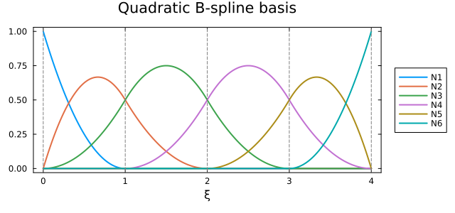
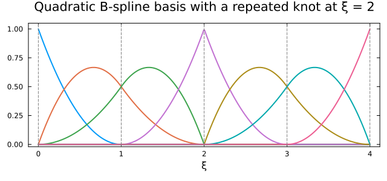
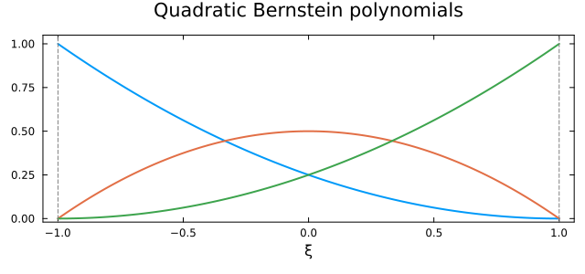
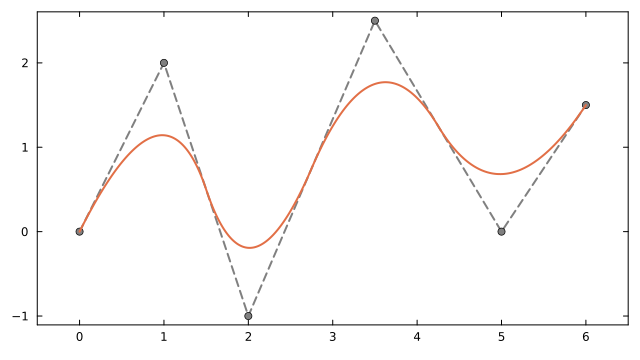
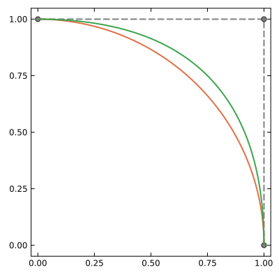
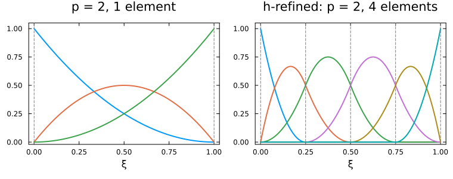
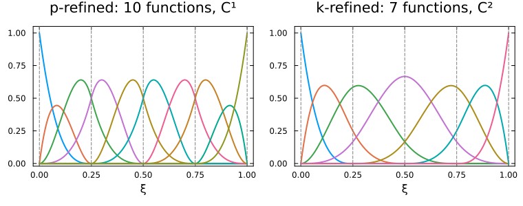

Splines
In isogeometric analysis, the geometry and the unknown fields are both described with splines: B-splines and their rational generalization, non-uniform rational B-splines (NURBS) [1, 2]. This topic guide introduces the definitions and properties of these functions that are needed to understand the rest of the documentation. How the splines are stored in FerriteIGA is discussed in the NURBSMesh topic guide, and how they are evaluated in an element routine in the BezierGrid and BezierCellValues topic guides.
A comprehensive treatment of splines can be found in The NURBS Book [5].
Knot vectors
A univariate B-spline basis is defined by a polynomial degree $p$ and a knot vector
\[\Xi = [\xi_1, \xi_2, \ldots, \xi_{n+p+1}], \qquad \xi_1 \leq \xi_2 \leq \ldots \leq \xi_{n+p+1},\]
a non-decreasing sequence of parametric coordinates, the knots. The knot vector defines $n$ basis functions. Knots may be repeated; the number of times a knot value appears is its multiplicity $m$. The non-empty intervals $[\xi_i, \xi_{i+1})$ between distinct knots are the knot spans, and play the role of elements.
A knot vector is called open if the first and the last knot both have multiplicity $p + 1$,
\[\xi_1 = \ldots = \xi_{p+1}, \qquad \xi_{n+1} = \ldots = \xi_{n+p+1}.\]
Open knot vectors are the standard choice in CAD and in isogeometric analysis, and are used everywhere in FerriteIGA. With an open knot vector, the basis is interpolatory at the two end points of the parametric domain $[\xi_1, \xi_{n+p+1}]$, so a spline curve starts and ends in its first and last control points. Knot vectors are uniform if the distinct knots are equally spaced, and non-uniform otherwise.
B-spline basis functions
The B-spline basis functions are defined recursively by the Cox–de Boor formula, starting from piecewise constants,
\[N_{A,0}(\xi) = \begin{cases} 1 & \text{if } \xi_A \leq \xi < \xi_{A+1}, \\ 0 & \text{otherwise}, \end{cases}\]
and, for $p \geq 1$,
\[N_{A,p}(\xi) = \frac{\xi - \xi_A}{\xi_{A+p} - \xi_A} N_{A,p-1}(\xi) + \frac{\xi_{A+p+1} - \xi}{\xi_{A+p+1} - \xi_{A+1}} N_{A+1,p-1}(\xi),\]
where terms of the form $0/0$ are defined to be zero.
To visualize the basis functions, FerriteIGA provides the FerriteIGA.BSplineBasis interpolation, which evaluates the Cox–de Boor formula directly. As an example, we construct the quadratic ($p = 2$) basis of the open, uniform knot vector $\Xi = [0, 0, 0, 1, 2, 3, 4, 4, 4]$, which has four knot spans and $n = 6$ basis functions:
Ξ = [0.0, 0, 0, 1, 2, 3, 4, 4, 4]
p = 2
basis = FerriteIGA.BSplineBasis(Ξ, p)
getnbasefunctions(basis)6BSplineBasis evaluates the B-spline basis functions on the whole parametric domain of the patch. This is useful for learning and for visualization, as on this page, but it is not how the basis is evaluated in an isogeometric simulation. There, the patch is converted to a BezierGrid, and the basis functions are evaluated element by element with BezierCellValues, see the BezierGrid and BezierCellValues topic guides.
Like other Ferrite interpolations, the basis functions are evaluated with Ferrite.reference_shape_value. Here, the "reference" coordinate is the parametric coordinate $\xi \in [0, 4]$. Since the basis is defined on half-open knot spans, the last point is moved slightly into the domain. The dashed lines mark the knots.
ξs = range(0, 4 - 1e-12; length = 400)
N = [Ferrite.reference_shape_value(basis, Vec((ξ,)), A) for ξ in ξs, A in 1:getnbasefunctions(basis)]
fig = plot(ξs, N; label = permutedims(["N$A" for A in 1:getnbasefunctions(basis)]),
title = "Quadratic B-spline basis", xlabel = "ξ", legend = :outerright)
vline!(fig, unique(Ξ); color = :gray, linestyle = :dash, linewidth = 1, label = "")
In the remaining figures on this page, the same steps are wrapped in a small plotting function plot_basis(Ξ, p), defined in the source of this page.
The B-spline basis functions have a number of important properties:
- Partition of unity: $\sum_{A=1}^n N_{A,p}(\xi) = 1$ for all $\xi$.
- Non-negativity: $N_{A,p}(\xi) \geq 0$.
- Local support: $N_{A,p}$ is non-zero only on $[\xi_A, \xi_{A+p+1})$, i.e. on at most $p + 1$ knot spans. Conversely, on each knot span exactly $p + 1$ basis functions are non-zero.
- Continuity: inside a knot span the basis functions are polynomials of degree $p$. Across a knot with multiplicity $m$ they are $C^{p-m}$-continuous. A knot with multiplicity $m = 1$ therefore gives continuity $C^{p-1}$, and $m = p$ gives $C^0$, as for standard finite elements.
The last property is the main difference compared to standard (Lagrange) finite elements, which are only $C^0$ between elements. Note also that the basis functions are not interpolatory at the interior knots: they do not take the value one at a "node" and zero at all others.
Repeating knots lowers the continuity. In the figure below, the knot at $\xi = 2$ has multiplicity $m = 2 = p$, and the basis is only $C^0$ there. At this knot one basis function takes the value one, and the basis is locally interpolatory.
Ξ = [0.0, 0, 0, 1, 2, 2, 3, 4, 4, 4]
plot_basis(Ξ, 2; title = "Quadratic B-spline basis with a repeated knot at ξ = 2")
Bernstein polynomials
A special case is the open knot vector without interior knots, $\Xi = [-1, \ldots, -1, 1, \ldots, 1]$, with $p + 1$ repetitions of each end value. The corresponding B-spline basis consists of the $p + 1$ Bernstein polynomials of degree $p$ on a single element,
\[B_{a,p}(\xi) = \frac{1}{2^p} \binom{p}{a - 1} (1 - \xi)^{p - a + 1} (1 + \xi)^{a - 1}, \qquad a = 1, \ldots, p + 1,\]
on the reference interval $[-1, 1]$.
Bernstein polynomials, together with Bézier extraction, are central to isogeometric analysis as implemented in FerriteIGA. On each element, the B-spline (and NURBS) basis functions are linear combinations of the Bernstein polynomials, with coefficients given by a small element matrix, the Bézier extraction operator. Since the Bernstein polynomials are the same on every element, they can be used as the reference shape functions (they are the shape functions of the IGAInterpolation), and the spline basis can be evaluated and integrated element by element on a reference element, exactly as in standard finite element analysis. This is what allows FerriteIGA to reuse Ferrite's element loops, quadrature rules and assembly, see the BezierGrid topic guide.
plot_basis([-1.0, -1, -1, 1, 1, 1], 2; title = "Quadratic Bernstein polynomials")
B-spline curves
A B-spline curve in $\mathbb{R}^d$ is a linear combination of the basis functions with vector-valued coefficients $\boldsymbol{X}_A \in \mathbb{R}^d$, the control points,
\[\boldsymbol{C}(\xi) = \sum_{A=1}^{n} N_{A,p}(\xi) \, \boldsymbol{X}_A.\]
The polygon through the control points is the control polygon. Because the basis functions are non-negative and form a partition of unity, the curve lies in the convex hull of the control points, and it follows the shape of the control polygon. In general, however, the curve does not pass through the control points, except at the end points (for an open knot vector) and at knots with multiplicity $p$.
Ξ = [0.0, 0, 0, 1, 2, 3, 4, 4, 4]
X = [Vec((0.0, 0.0)), Vec((1.0, 2.0)), Vec((2.0, -1.0)), Vec((3.5, 2.5)), Vec((5.0, 0.0)), Vec((6.0, 1.5))]
ξs = range(0, 4; length = 400)
N = bspline_basis(Ξ, 2, ξs)
C = N * X # evaluate the curve: C(ξ) = ∑ N_A(ξ) X_A
fig = plot(first.(X), last.(X); marker = :circle, linestyle = :dash, color = :gray, label = "control polygon")
plot!(fig, first.(C), last.(C); label = "B-spline curve", aspect_ratio = :equal, size = (640, 360))
In isogeometric analysis, the unknown field is represented in the same way: the unknowns are the coefficients $u_A$ (the degrees of freedom) of the basis functions, $u^h(\xi) = \sum_A N_A(\xi) u_A$. In FerriteIGA, the degrees of freedom are therefore associated with the control points, which are the nodes of the grid.
NURBS
B-splines are piecewise polynomials, and cannot represent conic sections such as circles and ellipses exactly. Non-uniform rational B-splines (NURBS) remedy this by assigning a positive weight $w_A > 0$ to each control point. With the weight function
\[W(\xi) = \sum_{A=1}^{n} N_{A,p}(\xi) \, w_A,\]
the NURBS basis functions are defined as
\[R_{A,p}(\xi) = \frac{N_{A,p}(\xi) \, w_A}{W(\xi)},\]
and a NURBS curve as
\[\boldsymbol{C}(\xi) = \sum_{A=1}^{n} R_{A,p}(\xi) \, \boldsymbol{X}_A.\]
The NURBS basis inherits the partition of unity, non-negativity, local support and continuity properties of the B-spline basis. If all weights are equal, the NURBS basis reduces to the B-spline basis.
A classical example is a quarter of a circle with unit radius, which is exactly represented by a quadratic NURBS curve with three control points and weights $(1, 1/\sqrt{2}, 1)$. The figure compares it to the B-spline curve with the same control points (i.e. with unit weights), which is not a circle.
Ξ = [0.0, 0, 0, 1, 1, 1]
X = [Vec((1.0, 0.0)), Vec((1.0, 1.0)), Vec((0.0, 1.0))]
w = [1.0, 1 / sqrt(2), 1.0]
ξs = range(0, 1; length = 200)
N = bspline_basis(Ξ, 2, ξs)
W = N * w # weight function W(ξ)
R = (N .* w') ./ W # NURBS basis functions
C_nurbs = R * X
C_bspline = N * X
fig = plot(first.(X), last.(X); marker = :circle, linestyle = :dash, color = :gray, label = "control polygon")
plot!(fig, first.(C_nurbs), last.(C_nurbs); label = "NURBS")
plot!(fig, first.(C_bspline), last.(C_bspline); label = "B-spline (unit weights)", aspect_ratio = :equal, size = (400, 400))
The distance of the NURBS curve to the origin is one, to machine precision:
extrema(norm.(C_nurbs))(0.9999999999999998, 1.0000000000000002)The rational form also affects derivatives. Using the quotient rule, the derivative of a NURBS basis function is
\[\frac{\mathrm{d} R_{A,p}}{\mathrm{d}\xi} = w_A \frac{N_{A,p}'(\xi) W(\xi) - N_{A,p}(\xi) W'(\xi)}{W(\xi)^2}, \qquad W'(\xi) = \sum_{B=1}^n N_{B,p}'(\xi) \, w_B.\]
This is how the gradients of the NURBS basis are computed in FerriteIGA, see the BezierCellValues topic guide.
Surfaces and solids
Multivariate splines are constructed as tensor products of univariate ones. A surface is defined by two knot vectors $\Xi^{(1)}$ and $\Xi^{(2)}$, with degrees $p_1$ and $p_2$ and $n_1$ and $n_2$ basis functions, and a net of $n_1 \times n_2$ control points $\boldsymbol{X}_{ij}$ with weights $w_{ij}$. The bivariate B-spline basis functions are products of the univariate ones,
\[N_{ij}(\xi, \eta) = N^{(1)}_{i,p_1}(\xi) \, N^{(2)}_{j,p_2}(\eta),\]
and the NURBS basis functions and surface are
\[R_{ij}(\xi, \eta) = \frac{N_{ij}(\xi, \eta) \, w_{ij}}{\sum_{k,l} N_{kl}(\xi, \eta) \, w_{kl}}, \qquad \boldsymbol{S}(\xi, \eta) = \sum_{i=1}^{n_1} \sum_{j=1}^{n_2} R_{ij}(\xi, \eta) \, \boldsymbol{X}_{ij}.\]
Solids follow in the same way with three parametric directions. Using a single global index $A$ for the pair $(i, j)$, the expressions are identical to the univariate ones, which is the notation used in the remaining topic guides.
The elements of a multivariate patch are the products of the knot spans in each direction. The domain described by one set of knot vectors and control points is called a patch. More complex geometries can be built from several patches, but FerriteIGA currently generates single-patch geometries only.
Refinement
The spline space of a patch can be enriched without changing the geometry or its parametrization. This is important in analysis, where the coarsest patch that describes the geometry is usually much too coarse for an accurate solution. There are three types of refinement [1].
h-refinement: knot insertion
Inserting a new knot $\bar\xi$ into the knot vector splits a knot span into two. The new basis has one more basis function, and the new control points and weights are computed such that the curve is unchanged (Boehm's algorithm) [5]. Inserting a new knot value gives $C^{p-1}$ continuity at that knot, whereas inserting an existing value increases its multiplicity and lowers the continuity.
mesh = NURBSMesh(([0.0, 0, 0, 1, 1, 1],), (2,), [Vec((0.0,)), Vec((0.5,)), Vec((1.0,))])
fine = knotinsertion(mesh, 0.5; dir = 1)
fine = knotinsertion(fine, 0.25; dir = 1)
fine = knotinsertion(fine, 0.75; dir = 1)
fine.knot_vectors[1]9-element Vector{Float64}:
0.0
0.0
0.0
0.25
0.5
0.75
1.0
1.0
1.0plot(plot_basis(mesh.knot_vectors[1], 2; title = "p = 2, 1 element"),
plot_basis(fine.knot_vectors[1], 2; title = "h-refined: p = 2, 4 elements");
layout = (1, 2), size = (760, 300))
p-refinement: order elevation
The polynomial degree can be raised while keeping the curve unchanged. To keep the same continuity at the existing knots, the multiplicity of every knot is increased by one. The number of elements stays the same.
pmesh = orderelevation(fine; dir = 1)
pmesh.knot_vectors[1]14-element Vector{Float64}:
0.0
0.0
0.0
0.0
0.25
0.25
0.5
0.5
0.75
0.75
1.0
1.0
1.0
1.0k-refinement
Knot insertion and order elevation do not commute. Elevating the degree of a mesh with interior knots keeps the continuity $C^{p-1}$ at those knots, so the degree is increased but the continuity is not. If the degree is instead elevated first on a coarse mesh, and the knots are inserted afterwards, the new knots have continuity $C^{p}$ with respect to the original degree $p$. This combination is called k-refinement, and gives a basis with both higher degree and higher continuity, and with fewer basis functions than p-refinement.
kmesh = smoothnesselevation(mesh, [0.25, 0.5, 0.75]; dir = 1)
kmesh.knot_vectors[1]11-element Vector{Float64}:
0.0
0.0
0.0
0.0
0.25
0.5
0.75
1.0
1.0
1.0
1.0plot(plot_basis(pmesh.knot_vectors[1], 3; title = "p-refined: $(length(pmesh.control_points)) functions, C¹"),
plot_basis(kmesh.knot_vectors[1], 3; title = "k-refined: $(length(kmesh.control_points)) functions, C²");
layout = (1, 2), size = (760, 300))
The functions used above are described in the NURBSMesh topic guide.